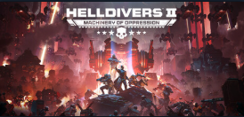
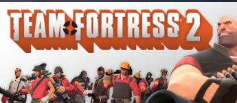
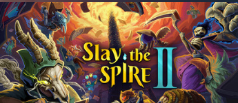
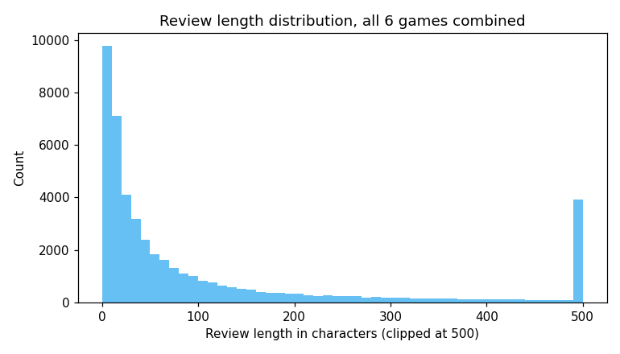
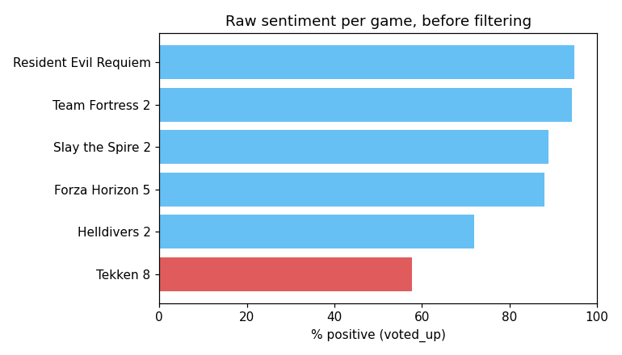

Showing a game's real sentiment by filtering out low-effort, junk reviews — using nothing but the review text, demoed live on any game.



A one-word "good game" and a considered, on-topic critique count equally toward a game's public score. That makes it hard to tell whether a score reflects genuine community sentiment, or is diluted by noise that says nothing about the game at all.
| Game | Genre | Reviews |
|---|---|---|
Helldivers 2 | Co-op shooter | 8,000 |
Team Fortress 2 | Multiplayer FPS | 8,000 |
Slay the Spire 2 | Deck-building roguelike | 8,000 |
Forza Horizon 5 | Racing | 8,000 |
Resident Evil Requiem | Survival horror | 8,000 |
Tekken 8 | Fighting | 8,000 |
Scoped to English-language reviews only — a human has to be able to verify a sentiment call to defend it. Steam's own language tag is reviewer-selected, not content-checked, so a second content-based filter drops any review containing non-Latin script.

A real spike near zero — a meaningful share of reviews are just a handful of characters.

Tekken 8 stands out as the only game under 60% positive — a real, ongoing monetisation backlash, not a data issue.
| Feature | Why it matters |
|---|---|
is_very_short | Near-zero-effort reviews (under 20 characters) say little about the game. |
is_low_playtime | A strong opinion after minutes ≠ after real engagement. |
is_duplicate_text | Copy-pasted/templated text is a hallmark of low-effort posting. |
is_new_reviewer | Accounts with 0-1 lifetime reviews skew toward throwaway posts. |
These four structural signals define a composite "low-effort" label — OR'd together, purely game-agnostic. That label is used only to train the quality filter below; the deployed model predicts it from review text alone, so it works even where no metadata is available.
| Model | Precision | Recall | F1 | ROC-AUC |
|---|---|---|---|---|
| TF-IDF + Logistic Regression | 0.821 | 0.934 | 0.874 | 0.960 |
| TF-IDF + Random Forest | 0.716 | 0.972 | 0.825 | 0.952 |
Precision 0.77-0.87 and recall 0.92-0.95, consistent across all six genres — including four the model wasn't specifically tuned toward. Top low-effort terms: good, gud, and genre-specific memes (for democracy, pootis) — generic writing patterns, not one controversy's vocabulary.
| Model | Precision | Recall | F1 | ROC-AUC |
|---|---|---|---|---|
| TF-IDF + Logistic Regression | 0.963 | 0.894 | 0.927 | 0.941 |
| LSTM (deep learning) | 0.960 | 0.884 | 0.920 | 0.924 |
Deep learning's extra capacity isn't paying off at ~33,000 training rows — a real, honest finding, and the reason the live app uses the simpler, lighter model (no TensorFlow dependency to deploy).
| Game | Before | After |
|---|---|---|
Resident Evil Requiem | 94.9% | 93.1% |
Team Fortress 2 | 94.4% | 91.4% |
Slay the Spire 2 | 89.0% | 85.4% |
Forza Horizon 5 | 87.9% | 78.2% |
Helldivers 2 | 72.0% | 61.3% |
Tekken 8 | 57.7% | 48.5% |
Every game's score drops after filtering — low-effort reviews skew more positive than substantive ones. Helldivers 2 crosses a full Steam category, "Mostly Positive" → "Mixed."
Running locally at localhost:8501 — start it before presenting with streamlit run app.py.
If the frame above is blank, the local server isn't running — fall back to the public deployment:
steam-review-filter-and-score.streamlit.app
(may take 30–60s to wake up if it's been idle).
A language-only model can both predict sentiment (ROC-AUC 0.94, 83-94% agreement with Steam's real vote) and filter low-effort reviews (ROC-AUC 0.96) consistently across six genuinely different genres — without needing any per-game metadata or timing signal.